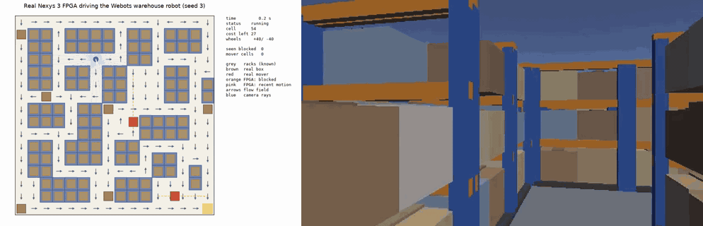
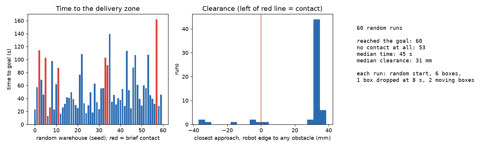

A Digilent Nexys 3 (Spartan-6 FPGA) is the whole brain of a robot simulated in Webots. The robot finds boxes and moving carts from four depth cameras, rebuilds a cost field and flow field every frame, and the board sends back the wheel speeds over Ethernet.

| Fits and runs at 100 MHz | 2,768 LUTs (30%), worst slack +0.125 ns, 0 timing errors |
|---|---|
| Verilog = Python model | identical replies on 5,346 simulated frames, 2,246 as Ethernet frames, 1,500 on the board |
| Real board in the loop | three random warehouses solved (72 s, 103 s, 69 s), no packet lost |
| Speed | at most 0.37 ms per 32 ms frame |
| 60 random warehouses | all reached the goal; 53 with no contact |
